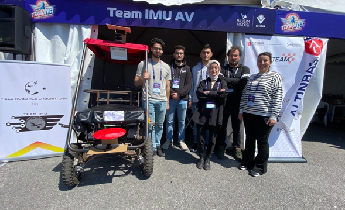
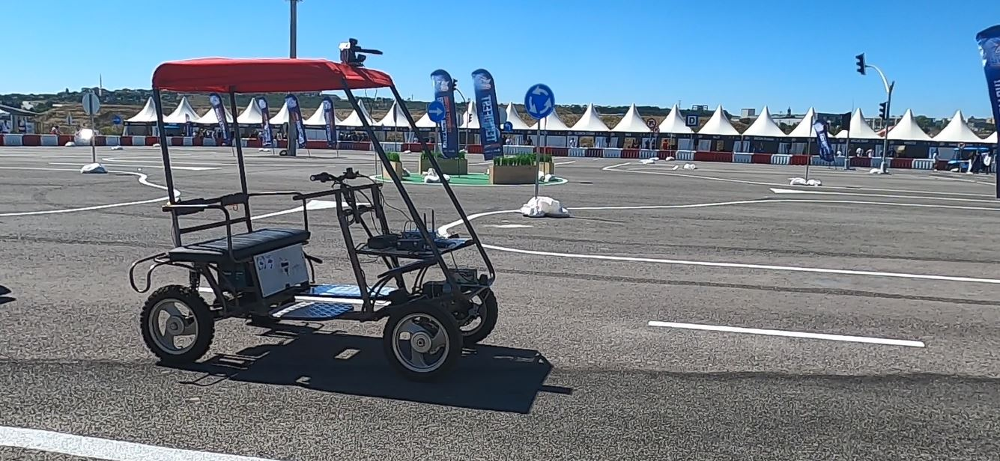

November,2023 - August,2024
2024 Teknofest AV Competition
Team IMU AV from the Field Robotics Laboratory at Istanbul Medeniyet University successfully completed the Teknofest Robotaxi Full-Scale Autonomous Vehicle Competition held at Kocaeli Gebze Technology Development Zone on August 20-23, 2024.
The competition features a parkour that emulates city traffic. The AV navigates through this parkour, stops at the first suitable stop sign to pick up a passenger and drops them off at a designated location. Throughout its journey, the AV detects traffic signs, obeys traffic rules, and completes the mission by parking in a valid empty space at the endpoint.
We extend our thanks to TUBITAK, T3 Foundation, Technology Development Zone ,Republic Of Türkiye Ministry of Industry and Technology, for organizing such a remarkable competition. A special thanks to the Maltepe Youth Center, part of the Ministry of Youth and Sports of Turkey, and to Ali Ramazan Tak, General Manager of Medeniyet Teknopark, for their support.
Congratulations to the team members: Gökhan Altun, Zafer Tunçer, Burak Rüstemoğulları, Muhammed Buğra Ayhan, Şaban Kahraman, Kübra YILDIZ , Sevban Bozaslan, Berkay Keskin, Gülçin Sağbaş, Yasir Bozyigit ve Muhammed Mehti Demirtaş
2022 - 2023
2023 Teknofest AV Competition
Team IMU-AV successfully completed the TEKNOFEST 2023 Autonomous Vehicle Competition held at Kocaeli/Gebze Informatics Valley.
Congratulations to the team members: Asude Bilgin, Gökhan Altun, Kübra Yıldız, Emirhan Gürsoy, Enes Kırımlı!

2022
2022 Teknofest AV Competition
Team IMU-AV achieved first place in the Critical Design Report stage at the TEKNOFEST 2022 Autonomous Vehicle Competitions held at Kocaeli/Gebze Informatics Valley from July 25 to 29, 2022. Additionally, they won the "Most Original Software" award in the Unique Vehicle Category.
At the competition held in Kocaeli/Gebze Informatics Valley from July 25th to 29th, 2022, our university's Field Robotics Laboratory conducted necessary mechanical and electronic revisions to equip the pre-developed electric vehicle with autonomous driving capabilities. The competition track and vehicle were accurately replicated in a simulation environment, where requisite software was developed before being transferred to the vehicle for real-world implementation.
The autonomous vehicle integrates AI-supported traffic sign detection, lane tracking, active obstacle avoidance, and precise location estimation.
At the TEKNOFEST 2022 Fair, held at Samsun Çarşamba Airport from August 30th to September 4th, Team IMU AV attended the award ceremony and showcased the developed autonomous vehicle.
Congratulations to the team members: Ferdi Dumandağ, M. Koray Yılmaz, Hasan Basri Okan, Abdullah Dangaç, Kübra Yıldız, Emre Fikri Baltacı, and Fatih Koç.


2021
2021 Teknofest AV Competition
Team IMU AV participated as a finalist in the Robotaxi competition held within the scope of Teknofest 2021. In a short time, our team developed the vehicle ready for autonomous driving!
Congratulations to the team members: Fatih Koç, M. Koray Yılmaz, Emre Fikri Baltacı, Yusuf Taha Karakaş, Mustafa Furkan Gedik!